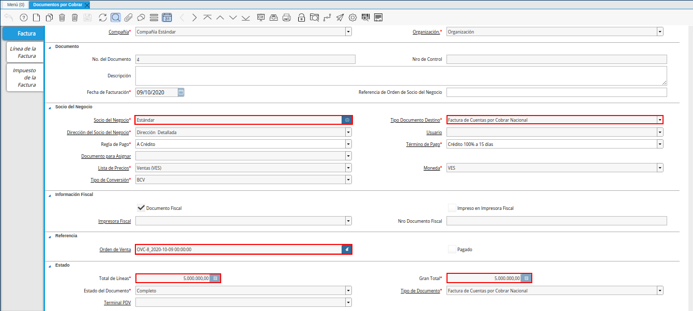

3.2. Mercancía en Consignación¶
El proceso de mercancía en consignación consiste en entregar una determinada mercancía a un socio del negocio para que este lo venda y cancele a la empresa u organización, el monto requerido por la misma.
Dicho procedimiento se registra en ADempiere generando un movimiento de inventario para reflejar la salida de los productos del almacén, utilizando el tipo de documento “Movimiento de Material Externo”. Para ello, debe realizar el proceso explicado en el documento Registro de Movimiento de Inventario, elaborado por la empresa ERPyA.
En el presente documento, se tiene como ejemplo el movimiento de inventario número “MME- 11”, elaborado con fecha de “09/10/2020”, bajo el tipo de documento “Movimiento de Material Externo”. En el cual se selecciona al socio del negocio “Estándar”, como el cliente que recibe los productos que contiene el movimiento de inventario.
Imagen 1. Movimiento de Inventario
Adicional a ello, se carga en la pestaña “Línea del Movimiento”, la ubicación “Comercialización” desde la cual se realiza el movimiento de inventario con la cantidad de “20” productos, a la ubicación “Consignación Estándar”. Movimiento en el que se utiliza el producto “Estandar”.
Imagen 2. Pestaña Línea del Movimiento


La relación de las ventas en consignación se realiza luego de que el cliente le pase a la empresa u organización desde la cual salen los productos, la relación de pago de los mismos. Para registrar correctamente la relación de las ventas en consignación se procede a realizar los siguientes procedimientos.
Se debe registrar una orden de venta con la fecha en la cual se realizó el movimiento de inventario. Utilizando el tipo de documento “Orden de Venta Consignación” y seleccionando como socio del negocio, el cliente relacionado con el almacén al cual fueron movidos los productos.
Imagen 3. Orden de Venta

Adicional a ello, se debe ingresar solamente la cantidad de productos cancelados por el cliente, con su respectivo precio de venta. Si desconoce el procedimiento para realizar en ADempiere una orden de venta, puede consultar el documento Registro de Orden de Venta, elaborado por la empresa ERPyA.
Imagen 4. Pestaña Línea de la Orden

Luego, se debe generar una entrega desde la línea de la orden previamente creada. Para ello, debe realizar el procedimiento que se explica en el documento Generar Entrega desde Líneas de la Orden, elaborado por la empresa ERPyA.
Imagen 5. Entrega desde Línea de la Orden

Por último, es necesario generar un documento por cobrar desde la línea de la orden de venta previamente realizada. Para ello, debe realizar el procedimiento que se explica en el documento Generar Factura desde Líneas de la Orden, elaborado por la empresa ERPyA.

Imagen 6. Documento por Cobrar
Warning
Recuerde que se registra la relación de ventas en consignación, luego de recibir la relación de pago del cliente.